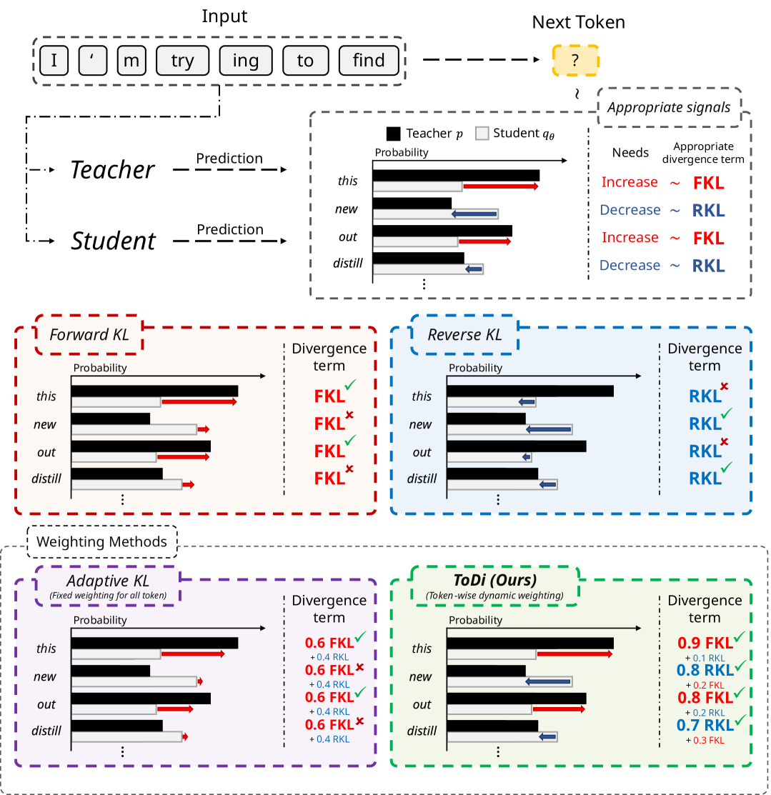
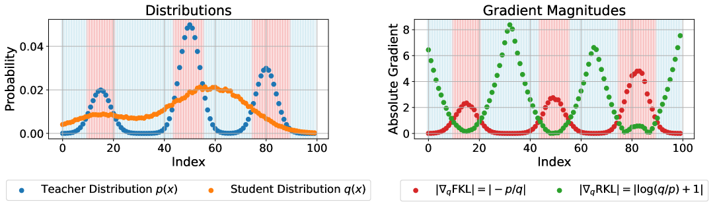
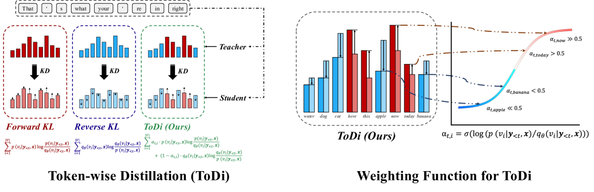
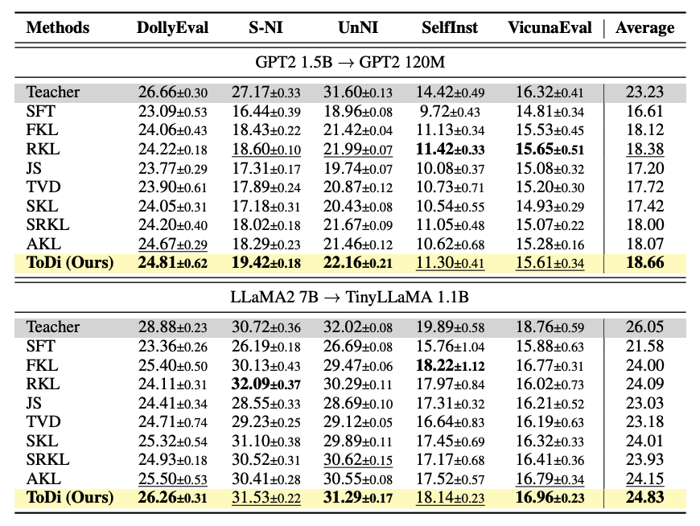
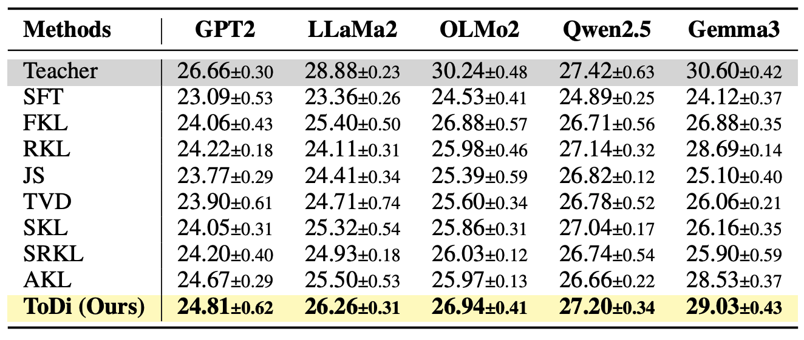

Chung-Ang University
Large language models (LLMs) offer impressive performance but remain impractical for resource-constrained deployment due to high latency and energy consumption. Knowledge distillation (KD) is a promising compression technique, yet existing methods apply a fixed divergence objective uniformly across all tokens — ignoring the rich token-level variation in how a student model relates to its teacher.
We propose ToDi (Token-wise Distillation), which dynamically combines Forward KL (FKL) and Reverse KL (RKL) divergences at the token level. Using a sigmoid-based weighting function derived from the teacher-student probability ratio, ToDi applies FKL where the student underestimates the teacher and RKL where it overestimates — achieving precise, token-adaptive distribution alignment. ToDi consistently outperforms existing distillation methods across instruction-following benchmarks.
Conventional knowledge distillation methods apply either Forward KL (FKL) or Reverse KL (RKL) uniformly across the entire vocabulary at each decoding step. However, FKL and RKL have fundamentally different gradient behaviors that make each one better suited for different token-level situations.

Figure 1. Token-wise learning signals for KL-based distillation objectives. Conventional methods apply a fixed divergence across the entire vocabulary, while ToDi dynamically blends Forward and Reverse KL per token based on the teacher–student probability ratio.
Through theoretical gradient analysis, we show that when the teacher probability exceeds the student's (p > q), FKL produces gradient magnitudes greater than 1, strongly pushing the student upward. Conversely, when the student overestimates (q > p), RKL delivers strong corrective signals while FKL provides only weak negative values. This complementary structure motivates a token-level combination strategy.

Figure 2. Toy example demonstrating the gradient behavior of FKL and RKL. In regions where p > q, FKL provides stronger learning signals; where q > p, RKL takes over.
ToDi adaptively combines FKL and RKL at the token level using a sigmoid-based weighting function. For each token position t and vocabulary item i, the weight is computed as:
When p > qθ, α exceeds 0.5, placing more weight on FKL. When qθ > p, α falls below 0.5, shifting emphasis to RKL. The final token-wise distillation loss is:
A stop-gradient operator is applied to the weighting function during backpropagation, ensuring the weights serve purely as adaptive coefficients. This design maintains the same computational complexity as standard FKL or RKL (O(V) per token), with no additional overhead.

Figure 3. Illustration of ToDi. For each vocabulary token, contributions of FKL and RKL are dynamically combined using a token-specific weight. The weight increases FKL emphasis when p > qθ and shifts to RKL when qθ > p, with a smooth sigmoid transition.
We evaluate ToDi on two student-teacher pairs — GPT2-120M distilled from GPT2-1.5B, and TinyLLaMA-1.1B distilled from LLaMA2-7B — across five instruction-following benchmarks (DollyEval, S-NI, UnNI, SelfInst, VicunaEval). ToDi consistently achieves the highest ROUGE-L scores across all settings.

Table 1. ROUGE-L scores on instruction-following benchmarks. ToDi outperforms SFT, FKL, RKL, and AKL baselines across both student-teacher configurations.
Beyond automatic metrics, we conduct GPT-4 pairwise evaluations to measure the quality of generated responses. ToDi achieves statistically significant wins (p < 0.001) over all baselines, confirming that token-wise divergence control leads to more human-preferred outputs.

Table 2. Additional analysis results including GPT-4 pairwise evaluation and ablation studies. Dynamic token-wise weighting (β=1) consistently outperforms static and reversed weighting schemes.
@inproceedings{jung-etal-2025-todi,
title = "{T}o{D}i: Token-wise Distillation via Fine-Grained Divergence Control",
author = "Jung, Seongryong and Yoon, Suwan and Kim, DongGeon and Lee, Hwanhee",
booktitle = "Proceedings of the 2025 Conference on Empirical Methods in Natural Language Processing",
year = "2025",
publisher = "Association for Computational Linguistics",
url = "https://aclanthology.org/2025.emnlp-main.409",
}